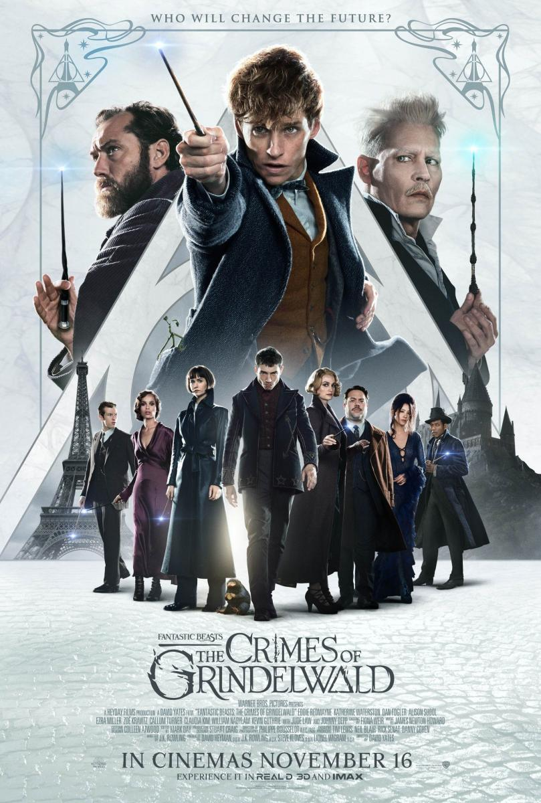

Las fuerzas de Saruman han sido destruidas, y su fortaleza sitiada. Ha llegado el momento de decidir el destino de la Tierra Media, y, por primera vez, parece que hay una pequeña esperanza. El interés del señor oscuro Sauron se centra ahora en Gondor, el último reducto de los hombres, cuyo trono será reclamado por Aragorn. Sauron se dispone a lanzar un ataque decisivo contra Gondor. Mientras tanto, Frodo y Sam continuan su camino hacia Mordor, con la esperanza de llegar al Monte del Destino.

La última entrega de 'Los juegos del hambre' nos muestra a una nación en guerra, en la que Katniss se enfrenta con uñas y dientes al presidente Snow (Donald Sutherland). Con la ayuda de algunos amigos, entre ellos Gale (Liam Hemsworth), Finnick (Sam Claflin) y Peeta (Josh Hutcherson), arriesgará la vida para salir del Distrito 13 y eliminar al presidente Snow.
Las tediosas vacaciones en casa de sus tíos todavía no han acabado y Harry se encuentra más inquieto que nunca. Apenas ha tenido noticias de Ron y Hermione y presiente que algo extraño está sucediendo en Hogwarts. En efecto, cuando por fin empieza el curso, sus temores se hacen realidad. El Ministerio de Magia niega que Voldemort haya regresado e inicia una campaña de desprestigio contra Harry y Dumbledore, encomendando a la horrible profesora Dolores Umbridge la tarea de vigilar todos sus movimientos. Así, pues, además de sentirse solo e incomprendido, Harry sospecha que Voldemort puede adivinar sus pensamientos e intuye que el temible mago trata de apoderarse de un objeto secreto que le permitiría recuperar su destructivo poder.
Después de haber recuperado el reino del Dragón Smaug en la montaña, la Compañía ha desencadenado, sin querer, una potencia maligna. Un Smaug enfurecido vuela hacia la Ciudad del Lago para acabar con cualquier resto de vida. Obsesionado con las enormes riquezas en su poder, el rey enano Thorin se vuelve codicioso, mientras Bilbo intenta hacerle entrar en razón haciendo algo desesperado y peligroso. Pero hay aún mayores peligros por delante. Sin la ayuda del mago Gandalf, su gran enemigo Sauron ha enviado legiones de orcos hacia la Montaña Solitaria en un ataque épico. Cuando la oscuridad se cierna sobre ellos, las razas de los Enanos, Elfos y Hombres deberán decidir si unirse o ser destruidos. Bilbo se encontrará así en la batalla épica de los Cinco Ejércitos, donde el futuro de la Tierra Media está en juego.

Cumpliendo con su amenaza, Grindelwald escapa de su custodia y ha comenzado a reunir seguidores, la mayoría de los cuales no sospechan sus verdaderas intenciones: alzar a los magos purasangre para reinar sobre todas las criaturas no mágicas. En un esfuerzo por frustrar los planes de Grindelwald, Albus Dumbledore (Jude Law) recluta a su antiguo estudiante Newt Scamander, quien accede a prestar su ayuda, sin conocer los peligros que aguardan. Las líneas quedan marcadas mientras el amor y la lealtad son puestos a prueba, incluso entre los amigos más cercanos y la familia, en un mundo mágico cada vez más dividido.
